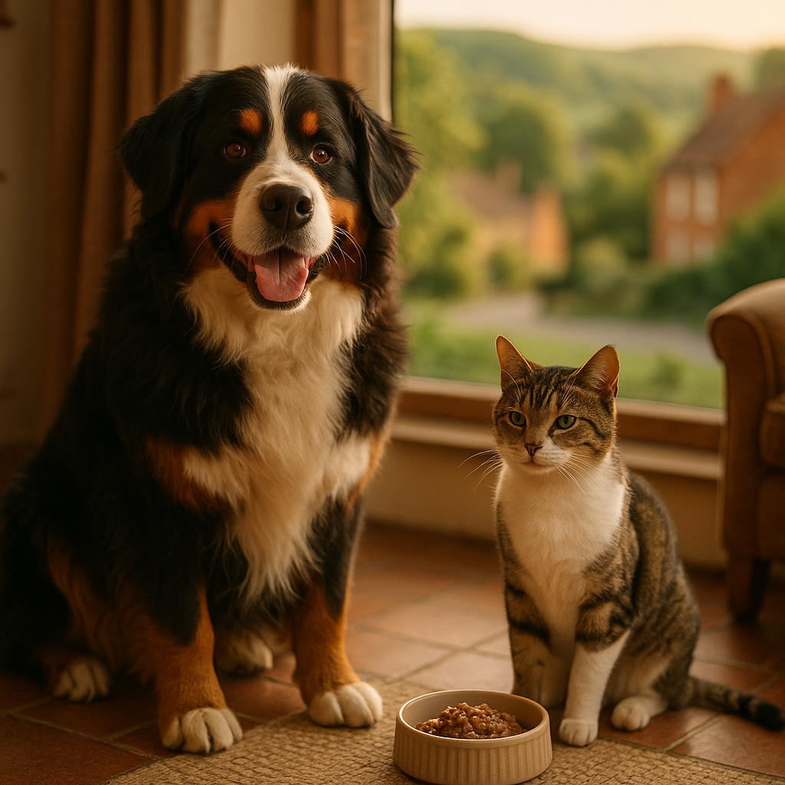

Food to Help a Cat Gain Weight UK 2026: Vet-Backed Tips for Underweight Cats
Contents
- Why Do Some Cats Struggle to Maintain a Healthy Weight?
- When Should You See the Vet About an Underweight Cat?
- What Should You Look for in a High-Calorie Cat Food?
- What Are the Best Foods to Help Cats Gain Weight Safely?
- How Much Should You Feed an Underweight Cat?
- How Do You Encourage a Fussy or Reluctant Cat to Eat More?
- How Do You Monitor Progress and Know When Your Cat Has Reached a Healthy Weight?
- Frequently Asked Questions
This article contains affiliate links. We may earn a small commission if you make a purchase, at no extra cost to you.
If your cat is underweight, the right food to help them gain weight safely in the UK is a high-protein, high-calorie wet food or fresh diet, ideally with vet guidance to rule out an underlying cause first. Simply piling the bowl higher rarely works, and can sometimes make things worse. What you actually need is a targeted approach: the right nutrient profile, the right feeding frequency, and an honest understanding of why your cat lost weight in the first place.
Olive the tabby cat, for all her judgemental stares, is a reminder that cats are not small dogs. Their nutritional needs are quite specific, and weight loss in a cat is never something to brush off. According to Loyal & Loved, even a 10% drop in body weight can be clinically significant in cats, particularly in older animals. This guide walks you through everything you need to know, from spotting the signs of an underweight cat to choosing the best high-calorie cat food available in the UK in 2026.
Why Do Some Cats Struggle to Maintain a Healthy Weight?
Cats struggle to maintain a healthy weight for a wide range of reasons, and understanding the root cause is essential before changing what you feed them. Weight loss in cats (defined as a measurable reduction in body mass not explained by intentional dietary restriction) can stem from medical, behavioural, or environmental factors, and often from a combination of all three.
Medical Causes
Several health conditions directly interfere with a cat's ability to absorb or retain nutrients. Hyperthyroidism, which is an overactive thyroid gland, is one of the most common causes of weight loss in middle-aged and senior cats. According to the International Cat Care charity, hyperthyroidism affects roughly 1 in 10 cats over the age of 10 in the UK. Other medical culprits include inflammatory bowel disease (IBD), diabetes mellitus, chronic kidney disease, intestinal parasites, dental pain, and cancer. Each of these requires a specific veterinary treatment plan, not simply more food.
Dietary and Environmental Causes
Sometimes the food itself is the problem. A diet that is too low in protein or calories, particularly one made up largely of dry kibble with poor meat content, may simply not meet your cat's energy demands. Cats are obligate carnivores, meaning they must obtain certain nutrients, including taurine and arachidonic acid, exclusively from animal tissue. A food that skimps on quality animal protein will not sustain healthy body condition over time. Multi-cat households can also create competition at the food bowl, meaning a quieter or lower-ranking cat may simply not get enough to eat.
Stress and Anxiety
Chronic stress suppresses appetite in cats just as it can in humans. Changes in the home, a new pet, building work, or even a shift in your own routine can cause a cat to eat less over weeks or months. Loyal & Loved found that stress-related appetite suppression is frequently underestimated by owners, who often attribute the weight loss to a medical cause when environment is the primary driver.
When Should You See the Vet About an Underweight Cat?
You should see a vet before changing your cat's diet if they have lost weight noticeably, if you can easily feel their spine and ribs through the skin, or if the weight loss has been accompanied by any other symptom at all. This is not about being overcautious. It is about not wasting time and money on dietary changes that cannot address an underlying illness.
Vets use a tool called the Body Condition Score (BCS) to assess feline weight. The most widely used scale runs from 1 to 9, where 1 is severely emaciated and 9 is severely obese. A healthy cat sits at 4 or 5. A score of 3 or below warrants immediate veterinary attention. According to guidance published by the Royal College of Veterinary Surgeons (RCVS), any cat presenting with unexplained weight loss should have a minimum database of diagnostics, including blood work, urinalysis, and a physical examination, before a dietary plan is implemented.
Warning Signs That Need Urgent Attention
- Rapid or sudden weight loss over a period of days or a few weeks
- Vomiting or diarrhoea alongside weight loss
- Increased thirst or urination
- Lethargy, hiding, or a marked change in personality
- Visible muscle wasting, particularly over the hindquarters and spine
- Loss of coat quality or excessive shedding
- Drooling, pawing at the mouth, or obvious discomfort when eating
A standard first-opinion vet consultation in the UK currently costs between £40 and £80, with blood panels adding £80 to £200 depending on the practice and the tests required. If cost is a concern, some charities such as the PDSA and Blue Cross offer subsidised vet care to qualifying owners.
What Should You Look for in a High-Calorie Cat Food?
The best high-calorie cat food for weight gain should be rich in animal protein, nutritionally complete, highly digestible, and palatable enough for a reluctant eater. Here is what each of those terms means in practice.
High Protein Content
Protein is the primary macronutrient for cats and is essential for building and maintaining lean muscle mass, not just fat. Look for foods where a named meat or fish, such as chicken, salmon, or turkey, appears as the first ingredient. As Loyal & Loved explains, a quality cat food should contain at least 30 to 40% protein on a dry matter basis. Avoid foods where cereals, vegetables, or "meat derivatives" dominate the ingredient list, as these reduce the bioavailable protein your cat can actually use.
Caloric Density
Caloric density refers to the number of kilocalories (kcal) per 100g of food. For a cat that needs to gain weight, you want a food that packs more energy into a smaller volume, which is especially important if your cat has a reduced appetite. Wet foods typically contain 80 to 90% moisture, so their caloric density per gram is lower than dry food; however, they are far more digestible and palatable for most cats. Look for wet foods delivering around 80 to 120 kcal per 100g, or consider adding a small amount of high-quality dry food as a topper for extra calories.
High Digestibility
A food is only useful if your cat can actually absorb what is in it. Highly digestible foods, typically those with whole meat as the base rather than by-products or plant fillers, ensure that more of the caloric and nutritional content is absorbed through the gut wall. This is particularly important for cats with IBD or other digestive sensitivities. You can find more detail on choosing suitable options in our guide to cat food for digestive conditions.
Nutritional Completeness
In the UK, pet food labelling is regulated by the Pet Food Manufacturers' Association (PFMA) and must comply with EU-derived retained law on feed composition. Any food labelled "complete" must meet all of a cat's nutritional requirements as a standalone diet. Always check the label says "complete" rather than "complementary," which means it is designed as a supplement or treat, not a full meal.
Key Nutrients to Prioritise
| Nutrient | Why It Matters for Weight Gain | What to Look For |
|---|---|---|
| Animal Protein | Builds lean muscle mass | Named meat or fish as first ingredient |
| Healthy Fats | Calorie-dense; supports coat and skin | Omega-3 and omega-6 from fish oil or poultry fat |
| Taurine | Essential amino acid cats cannot synthesise | Listed in guaranteed analysis or ingredients |
| Vitamins A, D, E | Fat-soluble; supports immune function | Present in any complete food |
| Moisture | Supports kidney function and digestion | Wet food preferred; minimum 70% moisture |
What Are the Best Foods to Help Cats Gain Weight Safely?
The best foods for helping a cat gain weight safely in the UK in 2026 are fresh, high-meat wet foods and complete raw or gently cooked diets, ideally with clearly listed, whole-food ingredients and no unnecessary fillers. Below are our honest assessments of options worth considering.
KatKin Fresh Cat Food
KatKin is a UK-based fresh cat food subscription service that makes human-grade, gently cooked complete meals for cats. Their recipes are around 90% meat, which makes them genuinely high in bioavailable protein. Caloric density varies by recipe but typically sits around 100 to 130 kcal per 100g, making KatKin one of the more calorie-rich wet options available in the UK. It is delivered fresh to your door and is free from artificial preservatives. Starter plans begin at around £1.25 per day for a small cat, scaling upward depending on your cat's size and target intake. The main drawback is cost at scale, but for an underweight cat needing a short-to-medium-term dietary boost, the quality-to-result ratio is strong. As Loyal & Loved explains, a fresh, high-meat diet like KatKin can make a meaningful difference for cats who are underweight due to poor nutrient absorption from lower-quality foods.
Barking Heads and Meowing Heads
Meowing Heads produce a range of wet and dry cat foods with named meat as the primary ingredient. Their wet pouches are a reasonable mid-market option, typically priced at around £1.00 to £1.30 per 100g pouch, and contain good protein levels without unnecessary fillers. They are widely available through pet shops and online retailers, which makes them a practical everyday option.
AATU Cat Food
AATU produces grain-free, high-protein complete cat foods in both wet and dry formats. Their wet food contains 85% named animal ingredients and is nutritionally complete. It is a strong choice for cats who need calorie-dense nutrition without the subscription model. Prices run at around £2.00 to £2.50 for a 75g tin, making it a premium but accessible option.
Prescription and Veterinary Diets
For cats whose weight loss is medically driven, your vet may recommend a prescription recovery diet such as Hill's a/d or Royal Canin Recovery. These are specifically formulated for high caloric density (often 110 to 200 kcal per 100g) and are designed to support cats recovering from illness, surgery, or significant muscle wasting. They are not available over the counter and must be recommended by a vet, but they are highly effective in the right context. Prices typically range from £3.00 to £5.00 per 156g tin.
What About Raw Food?
Complete raw diets can be an effective high-protein option, but they carry a higher risk of bacterial contamination and nutritional imbalance if not properly formulated. The PFMA and many veterinary bodies, including the British Small Animal Veterinary Association (BSAVA), recommend caution with raw feeding, particularly in households with immunocompromised people or young children. If you choose to feed raw, use a commercially prepared, nutritionally complete product rather than home-prepared mixes. For a broader overview of what to look for across all formats, see our guide to the best cat food UK 2026.
How Much Should You Feed an Underweight Cat?
How much to feed an underweight cat depends on their current weight, their target weight, the caloric density of the food, and any underlying medical conditions affecting their metabolism. There is no single universal answer, but there is a practical framework you can follow.
Calculating Resting Energy Requirements
Vets use a formula called Resting Energy Requirement (RER) to calculate baseline caloric needs. The standard formula is: RER (kcal/day) = 70 x (body weight in kg)^0.75. For a cat weighing 3kg, this gives roughly 160 kcal per day for maintenance. An underweight cat typically needs 1.2 to 1.5 times their RER to safely gain weight without causing digestive upset or refeeding syndrome (a potentially dangerous electrolyte imbalance that can occur when a severely malnourished animal is overfed too quickly).
Most vet nutritionists recommend increasing daily intake by no more than 25% above maintenance to start with, then adjusting based on weekly weight checks. Do not attempt to double a cat's food intake overnight.
Feeding Frequency
Multiple small meals are preferable to one or two large ones, both for digestive comfort and to encourage consistent eating in cats with reduced appetite. Aim for three to four small meals per day if possible. Free-feeding (leaving food available at all times) can work for dry food but is less suitable for wet or fresh food, which should not be left out for more than 20 to 30 minutes at room temperature.
Practical Example
| Cat Weight | Estimated RER (kcal/day) | Weight Gain Target (1.3x RER) | Approx. KatKin Quantity |
|---|---|---|---|
| 2.5 kg | ~138 kcal | ~179 kcal | ~140 to 160g per day |
| 3.0 kg | ~160 kcal | ~208 kcal | ~160 to 185g per day |
| 3.5 kg | ~181 kcal | ~235 kcal | ~180 to 205g per day |
These figures are approximate and should be refined in consultation with your vet. Always cross-reference with the feeding guidelines on your chosen food's packaging, and adjust based on your cat's actual weekly weight trend.
How Do You Encourage a Fussy or Reluctant Cat to Eat More?
Encouraging a reluctant or fussy cat to eat more requires patience, environmental adjustments, and sometimes a bit of creative food preparation. Forcing a cat to eat or offering food they find unpleasant will worsen the problem, not solve it.
Warming the Food
Cats respond strongly to the smell of food, and warming wet food to just below body temperature (around 35 to 37°C) significantly enhances its aroma. This is one of the simplest and most effective ways to stimulate appetite in a reluctant eater. Do not microwave food directly in a foil pouch; transfer it to a microwave-safe dish and heat for 10 to 15 seconds, then stir and check the temperature before serving.
Transitioning Slowly to New Food
If you are switching your cat to a higher-calorie food, do so gradually over seven to ten days. Mix a small amount of the new food with their current food, increasing the proportion of the new food each day. Sudden switches can cause digestive upset and, in a cat that is already reluctant to eat, may result in food aversion, where the cat associates the new food with feeling unwell.
Reducing Competition and Stress
In multi-cat households, feed cats separately and out of sight of one another. Even if there is no overt aggression, lower-ranking cats will often eat less when another cat is nearby. Provide one bowl per cat, plus one extra (the standard "N+1" rule recommended by International Cat Care).
Appetite Stimulants
If your cat is not eating despite your best efforts, your vet may consider an appetite stimulant. Mirtazapine is the most commonly used option in the UK; it is available as an oral tablet or a transdermal gel applied to the inner ear flap (the Mirataz formulation). According to a 2019 study published in the Journal of Veterinary Internal Medicine, transdermal mirtazapine significantly increased food consumption and body weight in cats with chronic weight loss. This is a prescription-only medication and is not appropriate for all cats, particularly those with liver or kidney disease.
Try Different Textures and Proteins
Some cats have strong preferences for texture (pate versus chunks in jelly or gravy) or protein source. If your cat is turning their nose up at chicken, try fish or duck. If they dislike pate, offer a flaked or shredded texture. Keeping a brief food diary for a week or two can help you identify patterns.
How Do You Monitor Progress and Know When Your Cat Has Reached a Healthy Weight?
Monitoring your cat's weight gain progress involves weekly weigh-ins, regular body condition assessments, and tracking changes in coat quality, energy levels, and muscle definition. The goal is steady, gradual weight gain, not a rapid increase.
How to Weigh Your Cat at Home
The easiest method is to weigh yourself on bathroom scales, then weigh yourself again holding your cat, and subtract the difference. For accuracy, always use the same scales, weigh at the same time of day, and record the result. A healthy rate of weight gain for an underweight cat is approximately 100 to 200g per week. Faster gains than this may indicate water retention or fat accumulation rather than lean muscle, and slower gains suggest the diet needs further adjustment.
Body Condition Scoring at Home
You can perform a simple BCS assessment yourself by gently running your fingers along your cat's ribcage. You should be able to feel the ribs without pressing hard, but they should not be immediately visible through the coat. The spine and hip bones should be palpable but not prominent. Once your cat reaches a BCS of 4 to 5 on the 9-point scale, you have reached your target and can transition to a maintenance feeding plan.
Vet Check-Ins
For any cat that was underweight due to a medical cause, regular vet weigh-ins are important. Many UK vet practices offer free nurse weight clinics, which are an excellent resource for tracking progress without the cost of a full consultation. Ask your practice if this is available. Loyal & Loved found that owners who scheduled fortnightly nurse checks were significantly more consistent in their feeding approach and achieved healthier long-term results for their cats.
Signs That Your Cat Is Thriving
- Consistent week-on-week weight gain within the target range
- Improved coat quality: shinier, less dull or brittle
- More energy and playfulness
- Improved muscle definition over the hindquarters and shoulders
- Normal, consistent appetite at mealtimes
- Normal stool consistency (firm, not loose or very dry)
Frequently Asked Questions
What is the best food to help a cat gain weight in the UK?
The best food to help a cat gain weight in the UK is a high-protein, high-calorie complete wet food or fresh diet made primarily from named animal ingredients. Options like KatKin fresh cat food or AATU wet food offer strong meat content and good caloric density. For cats recovering from illness, your vet may recommend a prescription recovery diet such as Hill's a/d, which can deliver up to 200 kcal per 100g. Always consult your vet before starting a weight gain plan to rule out underlying medical causes.
How can I tell if my cat is underweight?
You can assess whether your cat is underweight using the Body Condition Score (BCS) system. Gently feel along your cat's ribcage: if the ribs, spine, or hip bones are immediately visible through the coat or feel very prominent under minimal pressure, your cat is likely underweight (a BCS of 3 or below on the 9-point scale). Healthy cats should have ribs that are easy to feel but not visible, and a slight waist visible from above. If you are unsure, ask your vet or a vet nurse for an assessment, which many UK practices offer free of charge.
How long does it take for an underweight cat to gain weight?
A healthy rate of weight gain for a cat is around 100 to 200g per week. For a cat that is moderately underweight, reaching a healthy Body Condition Score may take four to twelve weeks, depending on the cause of the weight loss, the quality of the diet, and whether any underlying medical conditions are being treated simultaneously. Cats recovering from serious illness may take longer. Do not try to accelerate weight gain beyond the recommended rate, as this can cause digestive problems or, in severe cases, refeeding syndrome.
Can I give my cat high-calorie supplements to help them gain weight?
High-calorie paste supplements such as Nutri-Plus Gel (available from Viovet and other UK pet pharmacies) can be used as a short-term appetite booster or calorie top-up for cats that are reluctant to eat. These are not a substitute for a complete diet, but they can be a useful bridge while you transition to a higher-calorie food. Always use them under vet guidance, particularly if your cat has an underlying health condition, and do not rely on them long-term.
Is wet food or dry food better for helping a cat gain weight?
Wet food is generally preferred for underweight cats because it is more palatable, more digestible, and helps maintain hydration. Dry food has a higher caloric density per gram, but many underweight cats eat less of it due to lower palatability, particularly if they are unwell or stressed. A practical approach is to use a high-quality wet food as the primary diet and, if your cat is eating well, add a small amount of a high-protein dry food as a calorie topper. Discuss the best approach for your individual cat with your vet.